Formula 1 Seasons
Below is a list of all of the Formula 1 seasons in the decade; click on a year to see the cars and drivers featured on stamps for that specific Formula 1 season. Also listed are any specific events for the season featured on stamps in my collection and/or any stamps that feature the season in question. Click on an event or a championship winning driver name to see the stamps featuring that particular event or driver.
Below is a list of all of the Formula 1 seasons in the decade; click on a year to see the cars and drivers featured on stamps for that specific Formula 1 season. Also listed are any specific events for the season featured on stamps in my collection and/or any stamps that feature the season in question. Click on an event or a championship winning driver name to see the stamps featuring that particular event or driver.
2000
The Stewart team was bought by Ford and named Jaguar Racing. Williams started using BMW engines and BAR started using Honda engines. Jenson Button made his debut for Williams, after beating the teams test driver in a 'shoot-out' test. The season held the record for the least number of drivers competing, which was 23, until 2008. Michael Schumacher was Ferrari's first World Drivers Champion for 21 years. The season was marred by the death of a race marshal at the Italian Grand Prix. The two Jordans collided on the approach to the Variante della Roggia chicane and slid into the cars ahead of them, the marshal was struck by a loose tyre from one of the Jordans. Michael Schumacher considered leaving the sport, as this was the first death in Formula 1 since 1994.
The Stewart team was bought by Ford and named Jaguar Racing. Williams started using BMW engines and BAR started using Honda engines. Jenson Button made his debut for Williams, after beating the teams test driver in a 'shoot-out' test. The season held the record for the least number of drivers competing, which was 23, until 2008. Michael Schumacher was Ferrari's first World Drivers Champion for 21 years. The season was marred by the death of a race marshal at the Italian Grand Prix. The two Jordans collided on the approach to the Variante della Roggia chicane and slid into the cars ahead of them, the marshal was struck by a loose tyre from one of the Jordans. Michael Schumacher considered leaving the sport, as this was the first death in Formula 1 since 1994.
Constructor Title: Ferrari |

Ferrari - F1 World Champions 2000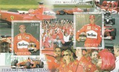 |
Formula 1 Cars (Various) Souvenir Sheet - 2000  |
Ferrari - F1 World Champions 2000  |
Ferrari - F1 World Champions 2000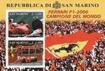 |
Formula 1 Cars (Various) Souvenir Sheet - 2000  |
Formula 1 Cars (Various) Souvenir Sheet - 2000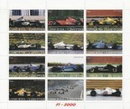 |
Formula 1 2000 - Ferrari Jaguar Jordan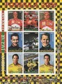 |
Formula 1 2000 - Sauber Minardi |
Formula 1 2000 - McLaren Williams Prost |
Formula 1 Monaco Grand Prix 2000  |
Michael Schumacher F1 World Champion 2000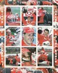 |
Michael Schumacher F1 World Champion 2000 |
2001
The FIA permitted the use of traction control - it had been banned since 1994. Fernando Alonso and Kimi Raikkonen both made their Formula 1 debuts. Renault returned for Formula 1, initially supplying engines to the Benetton team, but later taking over the team. Michelin re-entered Formula 1 as a tyre supplier (alongside Bridgestone). Murray Walker, the ""voice of Formula 1"", gave his final commentary at the United States Grand Prix. Ferrari, and Michael Schumacher, dominated the season, but Williams and McLaren did manage to score some race victories.
The FIA permitted the use of traction control - it had been banned since 1994. Fernando Alonso and Kimi Raikkonen both made their Formula 1 debuts. Renault returned for Formula 1, initially supplying engines to the Benetton team, but later taking over the team. Michelin re-entered Formula 1 as a tyre supplier (alongside Bridgestone). Murray Walker, the ""voice of Formula 1"", gave his final commentary at the United States Grand Prix. Ferrari, and Michael Schumacher, dominated the season, but Williams and McLaren did manage to score some race victories.
Constructor Title: Ferrari |

Formula 1 Cars (Various) Souvenir Sheet - 2001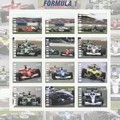 |
Formula 1 Cars (Various) Souvenir Sheet - 2001  |
2002
Michael Schumacher finished on the podium in every race, usually in first or second place. Schumacher won 11 Grand Prix, surpassing the previous record of nine wins previously held jointly by himself and Nigel Mansell. Schumacher also set the record for the shortest time in which the Drivers' Championship had been confirmed - he secured the title with a win at the French Grand Prix, with six races still to go in the season.
Michael Schumacher finished on the podium in every race, usually in first or second place. Schumacher won 11 Grand Prix, surpassing the previous record of nine wins previously held jointly by himself and Nigel Mansell. Schumacher also set the record for the shortest time in which the Drivers' Championship had been confirmed - he secured the title with a win at the French Grand Prix, with six races still to go in the season.
Constructor Title: Ferrari |

Austrian Grand Prix 2002 Commemorative Sheet  |
60th Anniversary Grand Prix Formula 1 - Souvenir Sheet  |
2003
A number of new regulations were introduced this season to help the smaller teams. One lap qualifying was introduced as a way for smaller teams to get more television exposure. Also, optional testing on the Friday of a Grand Prix weekend was introduced in exchange for fewer miles on stand-alone test days (test days were banned in 2004). The points system was also changed - points were now awarded to the first eight finishers (10, 8, 6, 5, 4, 3, 2, 1). Eight different drivers won a Grand Prix. Although Michael Schumacher continued to dominate, the Williams and McLaren of Juan Pablo Montoya and Kimi Raikkonen were able to seriously challenge the Ferrari. Arrows folded after 25 years in Formula 1. At the British Grand Prix, priest Neil Horan ran onto the Hangar straight during the race, wearing a green kilt and waving religious banners.
A number of new regulations were introduced this season to help the smaller teams. One lap qualifying was introduced as a way for smaller teams to get more television exposure. Also, optional testing on the Friday of a Grand Prix weekend was introduced in exchange for fewer miles on stand-alone test days (test days were banned in 2004). The points system was also changed - points were now awarded to the first eight finishers (10, 8, 6, 5, 4, 3, 2, 1). Eight different drivers won a Grand Prix. Although Michael Schumacher continued to dominate, the Williams and McLaren of Juan Pablo Montoya and Kimi Raikkonen were able to seriously challenge the Ferrari. Arrows folded after 25 years in Formula 1. At the British Grand Prix, priest Neil Horan ran onto the Hangar straight during the race, wearing a green kilt and waving religious banners.
Constructor Title: Ferrari |

2004
The season was dominated by Michael Schumacher and Ferrari - Schumacher won a record 13 races in 2004. Schumacher won his seventh drivers' title. BAR came an impressive second place in the constructors' championship, mainly due to Jenson Button's consistency. Both Williams and McLaren struggled this year. This was the last season that Jaguar competed in Formula 1; also, engine manufacturer Ford withdrew at the end of the season. In 2004, every team managed to score at least one World Championship point. From this season, teams that did not finish in the top four of the previous year's World Constructors Championship were allowed to run a third car on the Friday practice before a Grand Prix for testing purposes.
The season was dominated by Michael Schumacher and Ferrari - Schumacher won a record 13 races in 2004. Schumacher won his seventh drivers' title. BAR came an impressive second place in the constructors' championship, mainly due to Jenson Button's consistency. Both Williams and McLaren struggled this year. This was the last season that Jaguar competed in Formula 1; also, engine manufacturer Ford withdrew at the end of the season. In 2004, every team managed to score at least one World Championship point. From this season, teams that did not finish in the top four of the previous year's World Constructors Championship were allowed to run a third car on the Friday practice before a Grand Prix for testing purposes.
Constructor Title: Ferrari |

First Bahrain Grand Prix 2004 |
Michael Schumacher - World Champion 2004 |
Ferrari Team - Formula 1 Champions 2004 |
75th Anniversary of first Monaco Grand Prix |
First Bahrain Grand Prix 2004 |
10 Years of Motor Racing at the Bahrain International Circuit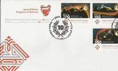 |
100th Anniversary of the FIA |
2005
The FIA introduced some significant rule changes, with a focus on increased reliability. Engines were required to last two Grand Prix without being changed. The most significant change was that tyre changes during the course of the race were prohibited. Ferrari, one of the few teams using the Bridgestone tyres, could not find the right balance between performance and reliability and so lacked pace. Ferrari did win one race however, the United States Grand Prix, but this was because only the cars using Bridgestone tyres actually took part. Michelin declared their tyres unsafe to run on the Indianapolis Motor Speedway's banked corner, and so the majority of the grid simply drove into the pits after the parade lap.
The FIA introduced some significant rule changes, with a focus on increased reliability. Engines were required to last two Grand Prix without being changed. The most significant change was that tyre changes during the course of the race were prohibited. Ferrari, one of the few teams using the Bridgestone tyres, could not find the right balance between performance and reliability and so lacked pace. Ferrari did win one race however, the United States Grand Prix, but this was because only the cars using Bridgestone tyres actually took part. Michelin declared their tyres unsafe to run on the Indianapolis Motor Speedway's banked corner, and so the majority of the grid simply drove into the pits after the parade lap.
Constructor Title: Renault |

2005 Hungarian Grand Prix |
50th Anniversary of the death of Alberto Ascari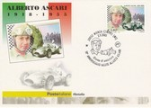 |
First Turkish Grand Prix 2005 |
10th Anniversary of the Australian Grand Prix at Albert Park - Melbourne |
2005 Hungarian Grand Prix |
2005 Hungarian Grand Prix |
2006
Fernando Alonso became the youngest ever double world champion. Michael Schumacher retired at the end of season. The season was dominated by the rivalry between Schumacher and Alonso - each won seven races. This was the first season since 1956 in which no British constructor won a race.
Fernando Alonso became the youngest ever double world champion. Michael Schumacher retired at the end of season. The season was dominated by the rivalry between Schumacher and Alonso - each won seven races. This was the first season since 1956 in which no British constructor won a race.
Constructor Title: Renault |
Driver Title: Fernando Alonso |
20th Anniversary of the Hungarian Grand Prix |
100 Years of Grand Prix Racing |
100th Anniversary of the first Grand Prix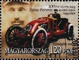 |
2007
Ferrari and McLaren were involved in an espionage controversy, which led to McLaren being excluded from the Constructors' Championship. This season saw the end of the existing Concorde Agreement between the existing Formula 1 constructors and Bernie Ecclestone. In particular, Mercedes-Benz, BMW, and Honda (collectively the Grand Prix Manufacturers' Association) had a number of outstanding disagreements with the FIA and Ecclestone on financial and technical grounds. These teams had threatened to boycott Formula 1 from 2008 onwards and set up a rival series. The Honda F1 team ran with an ""Earth livery"" on its car, this was the first time since 1968, when sponsorship in the sport became widespread, that a team ran sponsor-free for an entire season.
Ferrari and McLaren were involved in an espionage controversy, which led to McLaren being excluded from the Constructors' Championship. This season saw the end of the existing Concorde Agreement between the existing Formula 1 constructors and Bernie Ecclestone. In particular, Mercedes-Benz, BMW, and Honda (collectively the Grand Prix Manufacturers' Association) had a number of outstanding disagreements with the FIA and Ecclestone on financial and technical grounds. These teams had threatened to boycott Formula 1 from 2008 onwards and set up a rival series. The Honda F1 team ran with an ""Earth livery"" on its car, this was the first time since 1968, when sponsorship in the sport became widespread, that a team ran sponsor-free for an entire season.
Constructor Title: Ferrari |

Kimi Raikkonen World Champion - 2007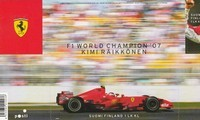 |
65th Monaco Grand Prix |
60 Years of Ferrari |
2008
Lewis Hamilton won the drivers' championship in dramatic style - Hamilton won the title by one point. Felipe Massa won the final race of season, the Brazilian Grand Prix, and when he crossed the line he thought he had won the title as Hamilton was running in 6th place. However, on the final corner, Hamilton took 5th place and the title. Hamilton was the first British champion since Damon Hill in 1996, the first black driver to win the title, and at the time the youngest champion. The first night race was run at the inaugural Singapore Grand Prix. Honda withdrew from Formula 1, citing the global economic crisis - Ross Brawn bought the team and named it Brawn GP. This was the last season to use grooved tyres, slick tyres returned for 2009. It was also the first ever year in which each team used the same two drivers throughout the whole season and it was the first time that all cars were driven without traction control since 2001.
Lewis Hamilton won the drivers' championship in dramatic style - Hamilton won the title by one point. Felipe Massa won the final race of season, the Brazilian Grand Prix, and when he crossed the line he thought he had won the title as Hamilton was running in 6th place. However, on the final corner, Hamilton took 5th place and the title. Hamilton was the first British champion since Damon Hill in 1996, the first black driver to win the title, and at the time the youngest champion. The first night race was run at the inaugural Singapore Grand Prix. Honda withdrew from Formula 1, citing the global economic crisis - Ross Brawn bought the team and named it Brawn GP. This was the last season to use grooved tyres, slick tyres returned for 2009. It was also the first ever year in which each team used the same two drivers throughout the whole season and it was the first time that all cars were driven without traction control since 2001.
Constructor Title: Ferrari |

Formula 1 Legends - Lewis Hamilton (World Champion 2008)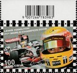 |
Lewis Hamilton - Winner Silverstone 2008 |
Lewis Hamilton F1 World Champion 2008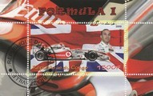 |
Lewis Hamilton F1 World Champion 2008  |
50th Anniversary of the Boavista Circuit |
50th Anniversary of the Boavista Circuit |
Singapore First Ever F1 Race and F1 First Night Race |
Lewis Hamilton F1 World Champion 2008  |
50th Anniversary of Ferrari F1 - 2008  |
60th Anniversary of the Death of Achille Varzi  |
2008 Australian Grand Prix |
2009
The 60th FIA Formula One World Championship season. Brawn GP became the first team to win the constructors' championship in their debut season. Jenson Button became the tenth British driver to the win the drivers' championship. Several rule changes were introduced by the FIA to cut costs; also, slick tyres were re-introduced and the Kinetic Energy Recovery System (KERS) was allowed.
The 60th FIA Formula One World Championship season. Brawn GP became the first team to win the constructors' championship in their debut season. Jenson Button became the tenth British driver to the win the drivers' championship. Several rule changes were introduced by the FIA to cut costs; also, slick tyres were re-introduced and the Kinetic Energy Recovery System (KERS) was allowed.
Constructor Title: Brawn GP |

Mark Webber Maiden Win - 2009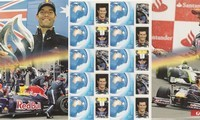 |
80th Anniversary of the first Monaco Grand Prix |